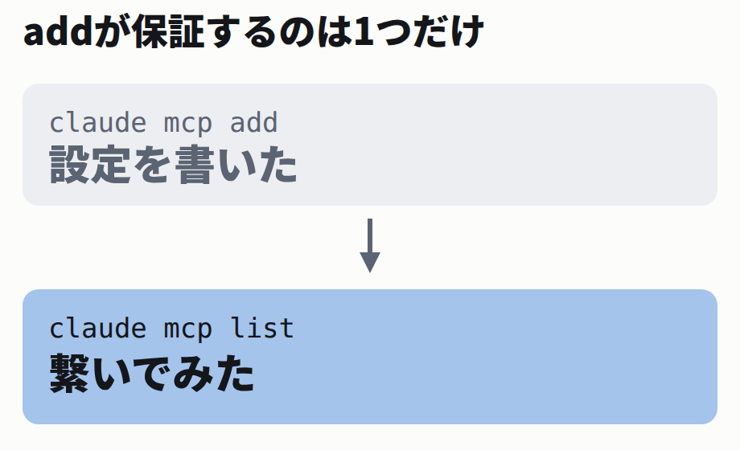

存在しないファイルを指しても、addは成功する
検証用に、依存ライブラリのいらない最小のMCPサーバーを1つ書きました。ツールは hello 1つだけです。全文は _labs/ にあります。
まずわざとファイル名を打ち間違えて登録します。hello.py を helo.py と打ちました。
わざと間違えて追加する
$ claude mcp add demo -- python3 helo.py
Added stdio MCP server demo with command: python3 helo.py to local confighelo.py は存在しないのに、成功しました。ここで作業を終えると、あとで「入れたのに動かない」になります。
一覧を見ると、初めて分かります。
claude mcp list（間違ったまま）
$ claude mcp list
Checking MCP server health…
demo: python3 helo.py - × Failed to connect — CONNECTION_CLOSED: Connection closedこの記事の端末ログには、幅40桁に収まらない行があります。枠の中を右へスクロールしてください。サーバーのパスは短くしてから測り直しましたが、Failed to connect — CONNECTION_CLOSED… の部分は claude 自身が出す文言です。こちらで縮めると書き換えになるので、そのまま貼っています。
パスを直して入れ直すと、通りました。
直したあと
$ claude mcp remove demo
$ claude mcp add demo -- python3 hello.py
$ claude mcp list
Checking MCP server health…
demo: python3 hello.py - √ Connectedこの √ と × は、この環境の端末での見え方です。公式ドキュメントでは ✔ と ✘ で書かれています。
公式ドキュメントも、add と list の役割をはっきり分けています。
Claude Code Docs「MCP」Server status より（原文）
claude mcp add confirms a successful add by printing an Added ... line, which means the configuration was written. claude mcp list then shows a health status next to each server it lists, such as ✔ Connected, ! Needs authentication, or ✘ Failed to connect.
「which means the configuration was written」がすべてです。add が保証するのは、設定ファイルに書けたことだけです。

add と list は別の仕事をしている。繋いでみるのは list のほう。